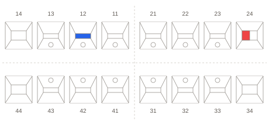

Run your practice with less friction.
Less hunting for information. More time for the patient. Your diary, clinical records, treatment plans and payments in one connected workspace.
Dental practice management software for UK teams. Keep reception, clinicians and practice managers working from the same patient record.
Clear pricing. Know what’s included before you commit.
Less chasing. More clarity.
Your schedule,
without the scramble.
Who’s arrived? Which chair is free? When is your clinician available? See appointments, statuses and working hours together, so reception can plan the next move.
- Switch between day, week, month and list views
- Track confirmations, arrivals and appointment status
- Plan around working hours, leave and blocked time
The whole patient picture.
Right there.
Keep the chart and your notes in view together. Move between medical history, assessments and treatment plans within the same patient record.
Your workspace, your way
Choose the clinical views you need. Keep notes alongside the chart on a larger screen, or give notes the full workspace when you want to focus.
A head start on the next plan
Start with a quick plan template, adapt it to the patient and track treatment as it progresses.
Build on a familiar note structure
Insert a reusable template, add the patient-specific detail and organise notes with tags. Keep the structure without starting from a blank page.

12Composite restorationPlanned
—HygienePlanned
Findings discussed. Treatment options explained and plan agreed with the patient.
All the details.
A lot less juggling.
The message to send. The balance to check. The patient to follow up. Keep everyday admin connected to the work it supports.
Patient communication
See the message in context.
Send email and SMS from the patient record, use message templates and check delivery status when a patient asks about a reminder.
Email · SMS · Message templatesBilling & payment plans
Answer the balance question.
Review charges, deposits and payments in the patient ledger. Create statements and manage payment plans for treatment paid in stages.
Patient ledger · Deposits · InstalmentsReports & insights
Find your next follow-up.
Review open treatment plans, overdue recalls and outstanding balances. Filter recall lists by clinician and export them for your team’s follow-up.
Recalls · Chair time · Financial reportsTeam & scheduling
Give the next task an owner.
Assign team tasks, keep conversations together and plan around staff schedules and leave. Make the next action visible to the people responsible.
Staff rotas · Leave · Shared tasksLab work
Keep lab work on the radar.
Track lab work in the same practice workspace as appointments and team tasks, so it stays part of the working day.
Lab tracking · Practice operationsPractice oversight
Keep checks within reach.
Keep surgery checklists, compliance evidence and audit records within reach of the people responsible.
Surgery checklists · Evidence · Audit trailBuilt around the people
who keep you moving.
Keep the day flowing.
Appointments, arrivals, patient messages and payments — the essentials for a well-run front desk.
Keep care connected.
Medical history, charts, notes and treatment plans, together around the patient you’re seeing.
Keep a clear overview.
Staff schedules, reports, lab work and daily checklists, with permissions to control who can do what.
Let’s make
it clear.
Choosing practice software is a big decision. Start with a conversation about what your team needs.
Ask us a questionWhat is Symly Dental?
Symly Dental is browser-based dental practice management software for UK dental teams. It brings appointment scheduling, patient records, clinical charting, treatment planning, billing and practice reporting into one workspace.
Can we try our everyday workflows in a demo?
Yes. Bring the tasks that frustrate your team: finding a note, changing a booking, checking a balance or building a recall list. We’ll walk through those workflows using example records, so you can judge how Symly fits. Please don’t send patient information with your enquiry.
How much does Symly cost?
Clear pricing starts with a clear quote. We’ll set out what’s included, the setup and training scope, ongoing charges and any additional costs, including email and SMS. You can review the full proposal before you commit.
Request pricingCan we use Symly in a browser?
Yes. Symly’s practice workspace is available through your web browser. Existing users can sign in here.
What should we check before switching?
Tell us your current system, the records you need, and any imaging, payment or other tools you rely on. We’ll discuss migration options and compatibility, plus training and support arrangements, before you plan a move. Availability depends on your setup; confirm the agreed scope in your proposal.
Does Symly support NHS workflows?
Symly includes NHS treatment and English FP17 claim workflows. Live claim submission is subject to supplier acceptance and practice configuration. Ask us about current availability and your requirements before relying on NHS submission.
Can we discuss data and access requirements?
Yes. We can walk through staff permissions and audit records, and discuss hosting, backups and your contractual requirements as part of evaluating Symly for your practice.
Your practice.
Better connected.
Bring the part of your day that takes too much effort.
Let’s
walk through it in Symly.
Start with your practiceShow us where the day gets complicated.
Explore the productWalk through real tasks with example records.
Know the costs before you commitWhat’s included, ongoing charges and any additional costs.